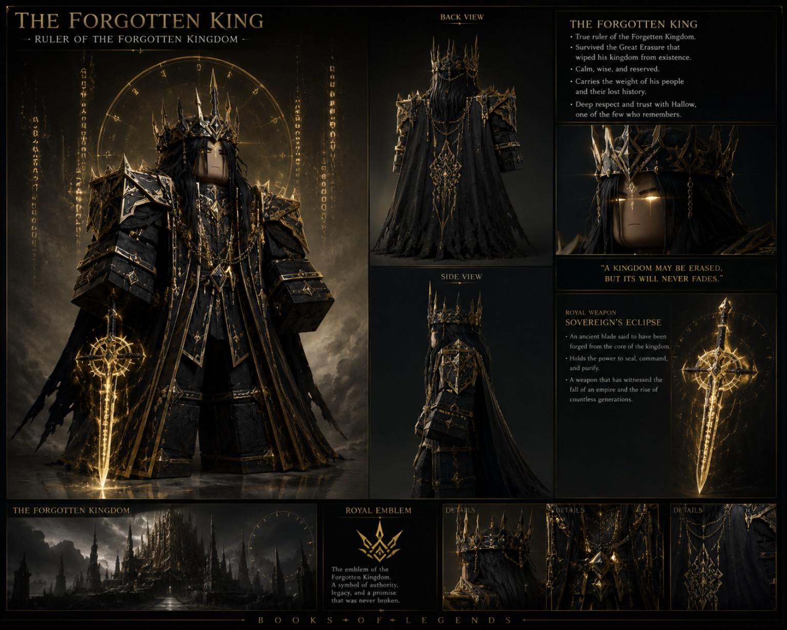

Ruler of the Forgotten Kingdom
The Forgotten King
The true king of a kingdom erased from the known record.
← All Characters
Character Archive
Profile & Background
The Forgotten King is the true ruler of the Forgotten Kingdom, whose history and path were erased. Hallow is among the few who remember its truth.
Appearance
Visual Identity
The concept shows black-and-gold royal armor, a crown, and a long dark cloak.
Canon note
Artwork can suggest ideas, but the creator has the final say. Unconfirmed details remain provisional until approved.